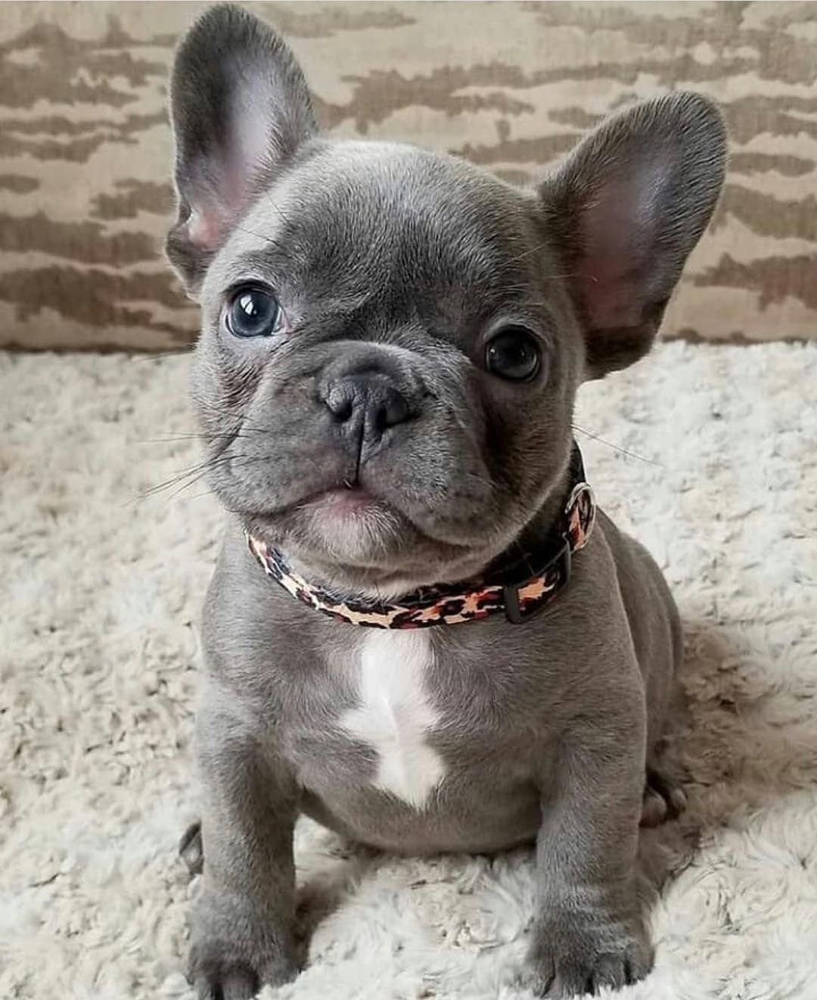

To have a blue coat, the French Bulldog must inherit two copies of the dilute gene. This gene is recessive, so the dog has to have two copies. Otherwise, their other genes will cover up the color, and they will simply be a carrier.
Many of these have a reddish pigment alongside their basic fawn coloration, which will make them look a bit
tanner.
The exact shade of their fawn color can vary widely.
Some are pretty dark and have much more black tips; others are incredibly light.
Often, you'll find these dogs at breeders that specialize in other fawn colorations.
There are no known health problems associated with these colors.
Many “pure black” Frenchies may have small amounts of white markings on their chest. Just because a dog is advertised as entirely black doesn't mean that they are entirely black. Be sure to ask for pictures of the dog before settling on a puppy. Many people are very drawn to the utterly black coloration. However, they tend to be rarer, so you may end up paying a bit more for them.